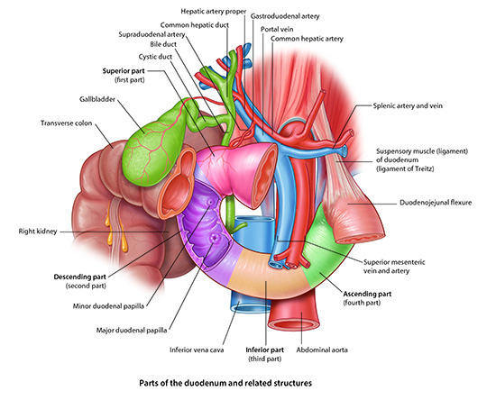

Stomach, Liver, Spleen: Module 2 - Page 5 of 7
| Now, add the abdominal lymph nodes. |
Why is it significant that these nodes follow the distribution of the portal venous drainage? |
|
|
Bowel cancer will spread over this distribution. |
|
Note that the abdominal lymph nodes drain eventually into the thoracic duct; which leaves the abdominal cavity through the aortic hiatus.
Now we will look at the relationship of the biliary drainage system to the portal area.
|  |
| Click on image to enlarge |
| Add the porta hepatis. | |
| Add the splenic vein. | |
| Add the biliary tree which consists of the left and right hepatic ducts and the common bile duct. | |
| Add the gallbladder. |